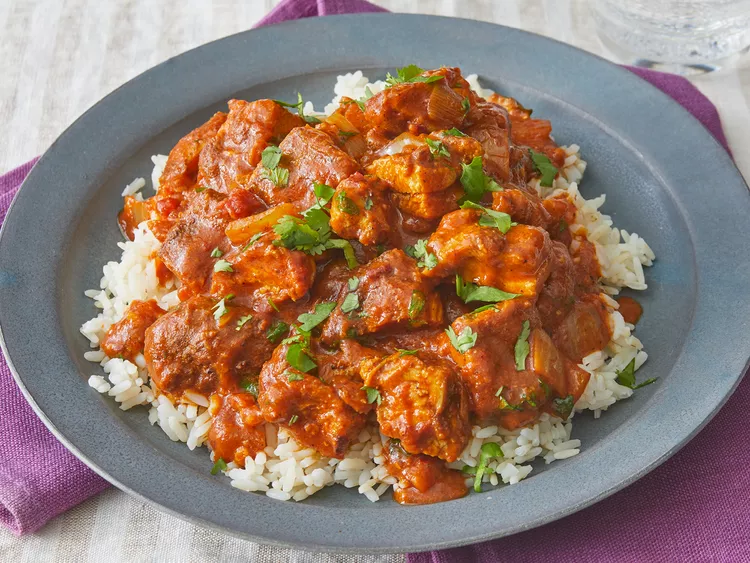

Chicken Tikka

Tender chicken in a creamy mild sauce and served with basmati rice
Ingredients
- 2 Chicken Breasts
- Brown Onion
- 400g Chopped Tomatoes
- 4 cloves garlic
- 1 tsp ginger paste
- 2 tsp Paprika
- 1 tsp Tumeric
- 1 tsp Chili Powder
- 3 Green Cardamom
- 3 Clove
- 1 tsp Cumin Seeds
- 1/2tsp Garam Masala
- Fresh coriander
- Lime
- Half cup Natural Yoghurt
- Half cup Heavy Cream
- 1 Cup Basmati Rice
Stages
- Mix the natural yoghurt, 1 tsp paprika, 1/2 tsp tumeric, 1/2 tsp chili powder, 1 tsp salt, and the juice of half a lime in a bowl
- Slice each chicken breast in two and mix them with marinade, then rest in a fridge for 2-4 hours
- Gently roast the cumin seeds, cardamom and cloves in a pan, then mix in a pestal & mortar until they form a fine mix
- Heat 1tbsp neutral oil in a pan, then cook 1 diced onion until golden. Add garlic and ginger and cook for 1 min until fragrant
- Add chopped tomatoes and a pinch of salt, and cook until tomatoes have thickened and the sauce reduced
- Add the remaining paprika, tumeric, chili and the ground spice mix then stir until fragrant.
- Add the chicken, 1/2 cup of water, then cover and cook approx 15-20 mins
- Once the chicken is cooked through, add garam masala and stir through, then take the pan off the heat to stir in heavy cream before returning it to the heat and bring to a simmer
- To finish, add fresh coriander to taste and a squeeze of lime, then serve with basmati rice